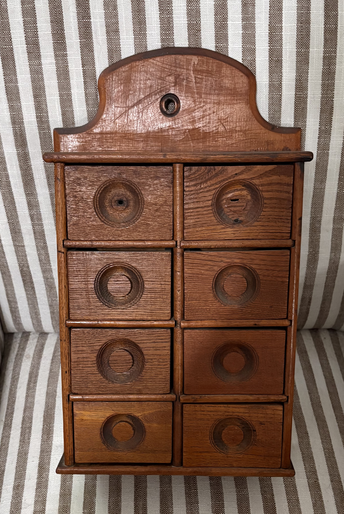

As We Remember Her
Agnes left behind two written recollections of her own life, and they are precise and generous — full of the smell of rendering lard, the sound of Czech songs at feather bees, the pleasure of a garden coming in. But there is a portion of her life she could not write, because it belongs not to her but to the people who came after her: the grandchildren who sat beside her on the sofa, the great-grandchildren who played at her feet. What follows is what they remember.
The Farm
The farm west of Tama left different impressions depending on how close you lived and how often you visited. Some grandchildren stayed overnight and know it in detail; others saw it only in glimpses. Certain things come through regardless. Great-Grandpa Rebik — Milo's father — sat in his rocking chair on the big porch outside. Agnes cooked on a large wood stove. On Sunday afternoons the children went upstairs to explore the bedrooms and felt, for no particular reason, that this was a grand adventure. And the farm had a mean dog with a habit of charging after visitors — one particular chase across the yard has never quite left the family's memory.
Her granddaughter Phylis holds onto a specific talisman from those visits: a pillow with velvet on one side and brocade on the other that Agnes kept, which she always had to have when she stayed over. She still wants it. Her granddaughter Carol remembers a small white pan that hung on a hook along the stairwell to the basement — the pan Agnes used to make oatmeal on their visits. Her granddaughter Mary's only memory of the farm is a faint impression from outside, looking in through a window. Her grandchildren Jane and Dave remember their grandmother only in Tama.
The House in Tama
The house on Pershing Street was small — everyone agreed on this without being asked. The bathroom alone told the story: the bathtub sat off to the side of the sink, and the water heater shared the same tight space, leaving just enough room to turn around. Agnes managed laundry with the ringer washer she pulled out into the kitchen. A plate comparing Presidents Lincoln and Kennedy hung on the kitchen wall; every grandchild who ever sat at that table remembered it the moment they were asked.

The grandchildren who visited had their own rituals. In the back room were coloring books, and the children knew to write their name and the date on any page they colored — so that the next cousin to visit could see who had been there before them. On the table was the candy bowl, always stocked with Brachs chocolates in various fillings, and Agnes always told them to help themselves. When there were enough people for a meal, the tin TV trays came out. On the last day of any stay, Agnes took whoever was visiting to the dime store in Tama and let each one choose a toy. Her granddaughter Carol always chose paper dolls — she loved the beautiful clothes.
Holiday gatherings brought Lawrence's and Hubert's families together under that small roof — a lot of people in a very small place, by any account.
Her great-granddaughter Jessica, who visited as a young child with her mother Phylis and brother Adam, carries her own set of details from the Tama house. There was a little wooden step stool with a diamond-shaped cutout in the middle that she turned into a mailbox, dropping folded letters through the slot. There was a rag doll with a red dress and black hair, and a black rocking chair with blue ABCs on it. These are the memories of a child who felt entirely at home.
Her great-grandson Todd — her granddaughter Ann's eldest son — mowed Agnes and Milo's lawn starting around fourth grade, riding his bike straight east from his other grandparents' house on 7th Street all the way to the end of the road. That was Agnes and Milo's place, before a housing addition grew up around them. He and his brother Eric slept over more than once, and they found it a fine adventure. Fall mowing had its own hazards: the apple tree behind the house left the yard littered with windfalls, and once Todd sent one shooting off the mower blade straight into the side of the house, right next to the bedroom window.
Washington Manor
After Milo died in October 1987, Agnes eventually moved to a small apartment in Belle Plaine called Washington Manor. It was a modest place, and she never complained about it. Her granddaughter Phylis, who lived in Toledo, would drive down on Friday nights when her husband Denny had ballgames in Belle Plaine — stopping to pick up pizza, then visiting Great-Grandma before heading to the game. Her great-granddaughter Jessica, on those visits, remembers a glass dish of assorted toffee candies in foil wrappers on the table — butter rum were her favorites.
Phylis had taken to making Agnes's clothing herself in those later years: sweatshirts and shoes and slippers with velcro closures, so that Agnes, whose hands were badly affected by rheumatoid arthritis, could dress herself more easily. Every Christmas, she received a new sweatshirt outfit. It was a small, practical kindness of the kind that never gets written down until now.
Her Table
Every grandchild who ever ate at Agnes's table has a version of the same story. The kolaches were smaller and more compact than the ones her own daughter made — her granddaughter Mary described them as "shrunken" — but they tasted just as good, and better still when Agnes warmed them in the electric skillet until the edges crisped and the filling went soft. Her granddaughter Karen, Hubert's daughter, loved the prune ones especially.
The sugar cookies were a separate category entirely. Agnes's were not rolled out — pressed flat with the bottom of a glass dipped in sugar, with both oil and butter in the dough, which is the reason they melted in your mouth. Phylis still makes them. Then there were the toffee bars — a brown sugar base with chocolate chips melted over the top — which everyone agreed tasted better than any recipe tried since, though no one could say exactly why. There was Thanksgiving scalloped corn with a crusty top. There was sauerkraut that drew particular praise. Agnes went out into the country somewhere to harvest filberts — hazelnuts — and used them in pies.
And there were the Popitees. Agnes called puff corn "Popitees" and kept it in a tin can, always on hand when the grandchildren came. She would say she didn't want any — then eat it happily the moment someone put a bowl in front of her.
Her Hands
Agnes crocheted through nearly all of it. Afghans — several grandchildren received one as a wedding gift. Baby blankets. Christmas decorations: a crocheted tree, a Mr. and Mrs. Snowman, a cover for a large coffee can that turned it into a little house, doorknob covers. Doilies that looked like fine tatting but were crocheted. And tablecloths — even when her hands were badly swollen with arthritis, she kept on, working in small four-inch squares, piecing them together one section at a time. A few grandchildren have one. Her great-granddaughter Jessica remembers a mint green shawl with a hood that Agnes made for her when she was small — she loved to wear it. Todd confirms it from a great-grandchild's vantage point: whenever he and Eric came to visit, Agnes was always crocheting or cooking or baking. That was simply what she did.
A Quiet Faith
At some point Milo stopped attending the Catholic church after a dispute over a pew.
The grandchildren noted her absence from church, and understood it only later. What struck every one of them was that it did not seem to diminish her. Her faith showed up not in observance but in disposition. Agnes's granddaughter Mary said it most plainly: "I don't think you have that kind of joy without a faith in God."
Near the end of his life, as his health declined, Grandpa Milo began speaking only in Czech. Agnes would translate his stories for the family when they visited. Some of those stories she refused to translate. She would turn red and simply tell him: "I am not going to repeat that."
What Everyone Remembered
If you gathered everyone who contributed to this chapter and asked them to name the one thing they remembered most, they would give you the same answer. She always had a smile and she never complained.
Not about the farm work. Not about the mastectomy. Not about the small apartment after Milo died. Not about arthritic hands that could no longer hold a pan or a crochet hook the way they once had. Not about spending seventeen years cleaning other people's houses to supplement the household income. Her granddaughter Karen asked her once whether she had wanted to get married at sixteen. Agnes said that was just the way it was done back then — school until eighth grade, work on the farm, then marriage. It was a statement of fact, not complaint.
She had small phrases that everyone remembered. When the light got low in the house, she'd say "make a light" — the old Czech way of putting it. She said "birth a day" for birthday, a remnant of the language she'd spoken from childhood. Karen, reflecting on a lifetime of visits, said simply that she had grown up wanting to be a grandma just like Grandma Rebik.
The first time her great-grandson Todd brought his future wife Deb home to Iowa to meet the family, she was amazed. Her own grandparents were already gone. Todd not only had grandparents — he had a great-grandmother, and Deb got to meet her.
While recollecting these memories — in particular her quiet refusal to complain despite a life that asked so much of her — her granddaughter Jane said it best:
"If you asked her, she would not say she had a hard life. She would say some things were hard to do — but my life was not hard."
Agnes remembered what by any measure was a hard life with what her family recognized as great joy. They all said so, and none of them could quite explain it. That may be the point.